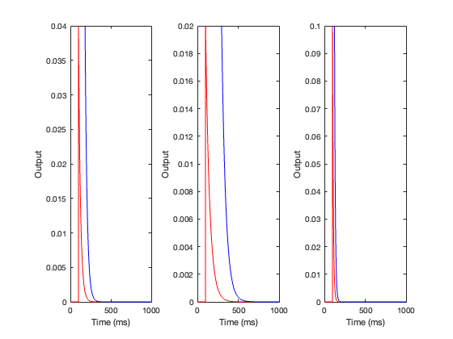
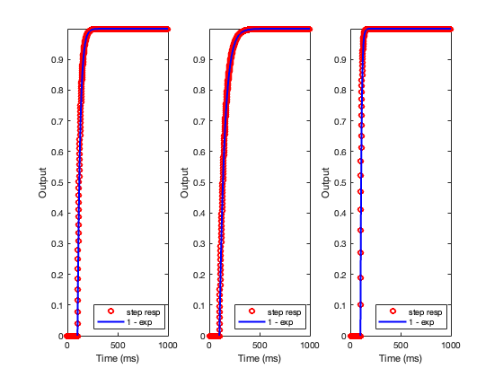

Contents
clear; close all; clc;
1)
deltaT = 1; % ms duration = 1000; % ms t = 0:deltaT:duration-deltaT; x = zeros(size(t)); x(100) = 1; tau = 25; % ms y1 = output(x, t, deltaT, tau); fig1 = figure(); plot(t, y1, 'ro-'); xlabel('Time (ms)') ylabel('Output')

a)
Impulse response
deltaT = 1; % ms duration = 1000; % ms t = 0:deltaT:duration-deltaT; x = zeros(size(t)); x(100) = 1; taus = [25, 50, 10]; % ms fig2 = figure(); for ll = 1:length(taus) tau = taus(ll); y1 = output(x, t, deltaT, tau); subplot(1, 3, ll) plot(t, y1, 'r-'); hold on; t_new = t-100; exponential = exp(-(t_new./tau)); plot(exponential, 'b'); xlabel('Time (ms)') ylabel('Output') ylim([0, max(y1)]) end
b)
Step response
deltaT = 1; % ms duration = 1000; % ms t = 0:deltaT:duration-deltaT; x = zeros(size(t)); x(100:1000) = 1; taus = [25, 50, 10]; % ms fig3 = figure(); for ll = 1:length(taus) tau = taus(ll); y1 = output(x, t, deltaT, tau); subplot(1, 3, ll) plot(t, y1, 'ro', 'DisplayName', 'step resp'); hold on; t_new = t-100; exponential = 1 - exp(-(t_new./tau)); plot(exponential, 'b', 'LineWidth', 2, 'DisplayName', '1 - exp'); xlabel('Time (ms)') ylabel('Output') ylim([0, max(y1)]) legend('Location', 'southeast') end
c)
Sinusoidal response
deltaT = 1; % ms duration = 1000; % ms t = 0:deltaT:duration-deltaT; x = sin(2*pi*t); tau = 25; % ms fig3 = figure(); for ll = 1:length(taus) tau = taus(ll); y1 = output(x, t, deltaT, tau); subplot(1, 3, ll) plot(t, y1, 'r-', 'DisplayName', 'step resp'); hold on; % t_new = t-100; % exponential = 1 - exp(-(t_new./tau)); % plot(exponential, 'b', 'LineWidth', 2, 'DisplayName', '1 - exp'); % xlabel('Time (ms)') ylabel('Output') %ylim([0, max(y1)]) legend('Location', 'southeast') end
Functions
function y1 = output(x, t, deltaT, tau) y1 = zeros(length(t), 1); for tt = 1:length(t) - 1 deltaY1 = (deltaT/tau) * (-y1(tt) + x(tt)); y1(tt + 1) = y1(tt) + deltaY1; %y1Save(tt) = y1; end end